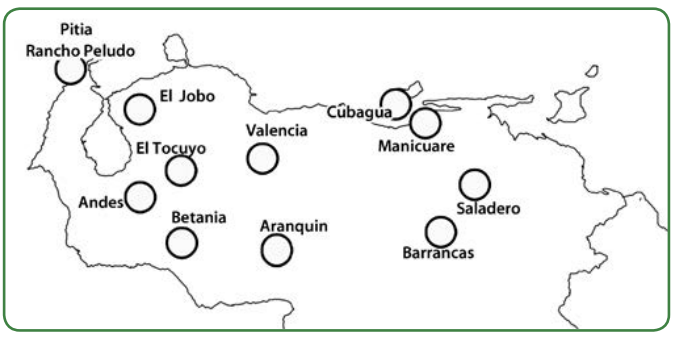

HISTORIA DE VENEZUELA
Profesora de curso: Maria Garcia
Primeras formaciones agroalfareras de Venezuela y América
Todas las comunidades humanas de los primeros tiempos de su historia, evolucionaron hacia otras formas de vida que les asegurara mejores condiciones. Descubrir la agricultura y la domesticación de animales, significó convertirse en seres productores de sus alimentos y fue el factor fundamental para el tránsito del nomadismo a la sedentarización, porque tenían que quedarse en un mismo lugar hasta cosechar lo que se había sembrado. Es por eso que hubo grupos sedentarios temporalmente y otros que se acostumbraron a vivir en un mismo lugar de forma permanente.
En Venezuela y en otros países de América, el cultivo de plantas empezó conjuntamente con la confección de objetos de barro (alfarería) que dieron impulso a la sedentarización. Los especialistas afirman que 3000 años a.d.n.e. surgieron al norte de Suramérica y en Centroamérica las primeras comunidades agroalfareras. El antropólogo Miguel Acosta Saignes, en su libro Época prehistórica, refiere que el arqueólogo José María Cruxent halló en el yacimiento alfarero de Rancho Peludo (al noroeste del estado Zulia), la cerámica más antigua de Venezuela: datada por carbono 14 a principios del tercer milenio a.d.n.e. Acosta Saignes formula esta pregunta: “¿Significa la aparición de cerámica en Rancho Peludo, en fecha tan remota, que allí se había comenzado a cultivar? Pregunta que todavía no se puede responder”. Sólo esa es tan antigua, las otras cerámicas halladas permiten considerar que en Venezuela se inició la alfarería y la cerámica a comienzos del año 1000 a.d.n.e.
Observa en el cartograma los principales yacimientos alfareros.

Las comunidades indígenas que tuvieron la yuca como principal cultivo han sido llamadas “gente dela yuca” y a las que tuvieron el maíz como principal cultivo, “gente del maíz.” Pero eso no significa que cada grupo cultivaba solamente esa planta, porque como tú sabes, en un conuco se cultivaba y se cultiva gran variedad de plantas. El principal cultivo de nuestros indígenas del pasado era la yuca, en segundo lugar el maíz.
Dos tipos de yuca se cultivaban:
1. la yuca dulce para comerla asada o sancochada.
2. yuca amarga para fabricar casabe.
Referencia: Historia de Venezuela y de Nuestra América 1er año Editorial Colección Bicentenario Pág.21-22